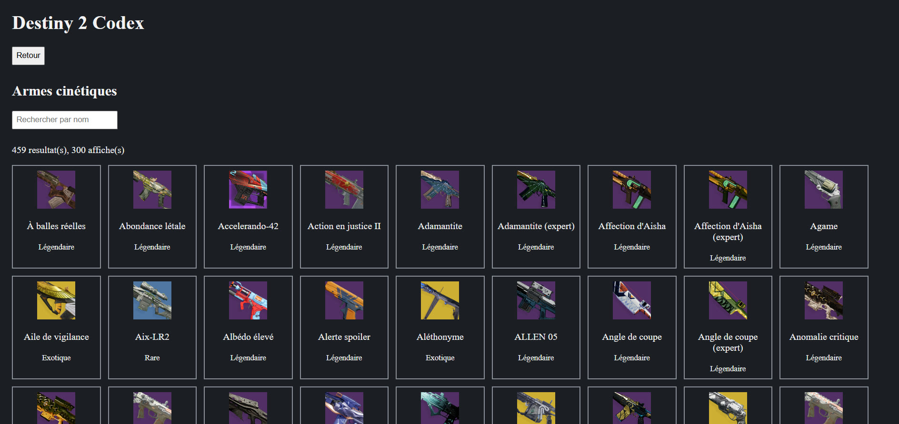

Projet universitaire · R3.01
Destiny 2 Codex
Application web client riche qui explore l’équipement de Destiny 2 via l’API officielle de Bungie.

En bref
Trois écrans : les emplacements d’équipement, la liste des objets d’un emplacement avec recherche par nom et filtre par classe (Titan, Chasseur, Arcaniste), puis la fiche détaillée avec ses statistiques. Tout est construit à partir du manifeste du jeu, en français.
Points techniques
- Quatre requêtes dépendantes : manifeste → table des emplacements → table des objets (téléchargée une seule fois et gardée en mémoire) → une requête par statistique.
- Code organisé en classes (
Codex,ApiBungie,Affichage…), documenté par un diagramme de classes. - Affichage limité à 300 cartes pour rester fluide, icône par défaut si l’API n’en fournit pas, clé d’API hors du dépôt.
Captures et documents
Extraits de code
export default class Codex {
constructor(cle) {
this.api = new ApiBungie(cle);
this.affichage = new Affichage();
this.chemins = null; //requete 1
this.emplacements = []; //requete 2
this.objets = null; //reuete 3
this.nomsStats = {};
this.ficheActuelle = null;
}
async demarrer() {
this.affichage.afficherMessage("Chargement du menu....");
try {
this.chemins = await this.api.chercherManifeste();
const donnees = await this.api.chercherDefinitions(this.chemins.DestinyInventoryBucketDefinition);
this.emplacements = this.creerEmplacements(donnees);
this.afficherMenu();
} catch (erreur) {
this.affichage.afficherErreur(erreur.message);
}
}
creerEmplacements(donnees) {
const liste = [];
for (const hash in donnees) {
const e = donnees[hash];
if (e.category === 3 && e.displayProperties && e.displayProperties.name) {
liste.push(new Emplacement(hash, e));
}
}
liste.sort(function (a, b) {
return a.ordre - b.ordre;
});
return liste;
}export default class ApiBungie {
constructor(cle) {
this.cle = cle;
this.adresse = "https://www.bungie.net";
this.langue = "fr";
}
// manifeste pour avoir tous les chemins des tables
async chercherManifeste() {
const reponse = await fetch(this.adresse + "/Platform/Destiny2/Manifest/", {
headers: { "X-API-Key": this.cle },
});
if (!reponse.ok) {
throw new Error("Erreur sur le manifeste : " + reponse.status);
}
const donnees = await reponse.json();
return donnees.Response.jsonWorldComponentContentPaths[this.langue];
}
// a partir du chemin on vient récupérer le contenu de la table
async chercherDefinitions(chemin) {
const reponse = await fetch(this.adresse + chemin);
if (!reponse.ok) {
throw new Error("Erreur sur " + chemin + " : " + reponse.status);
}
const donnees = await reponse.json();
return donnees;
}
async chercherParHash(table, hash) {
const adresse = this.adresse + "/Platform/Destiny2/Manifest/" + table + "/" + hash + "/?lc=" + this.langue;
const reponse = await fetch(adresse, {
headers: { "X-API-Key": this.cle },
});
if (!reponse.ok) {
throw new Error("Erreur sur " + table + " " + hash + " : " + reponse.status);
}
const donnees = await reponse.json();
return donnees.Response;
}
}